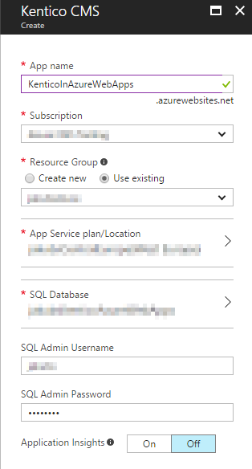
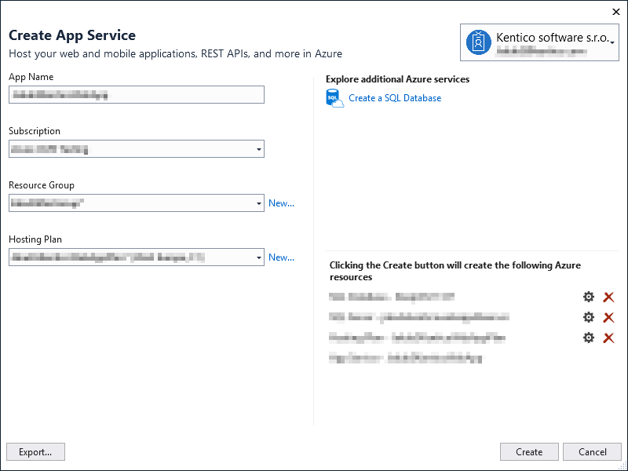
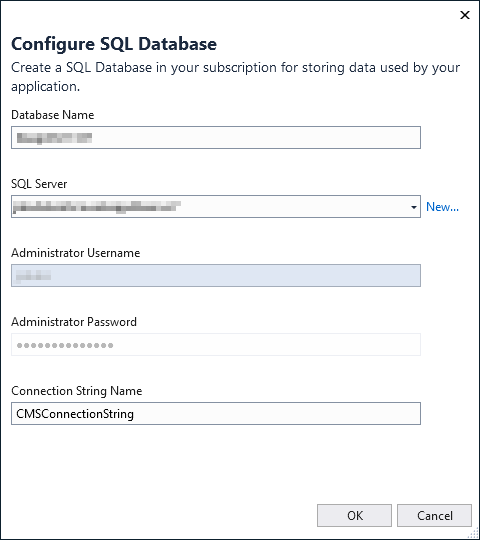
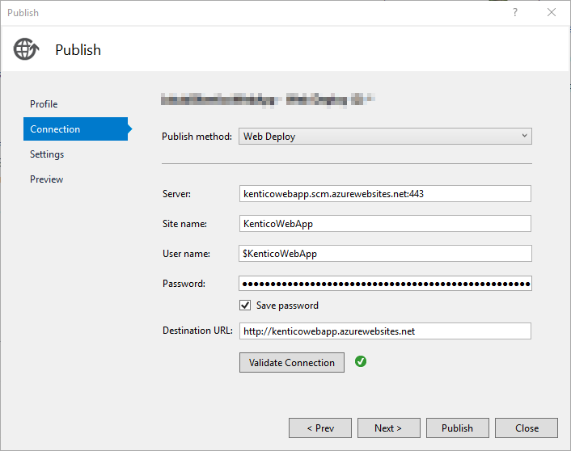
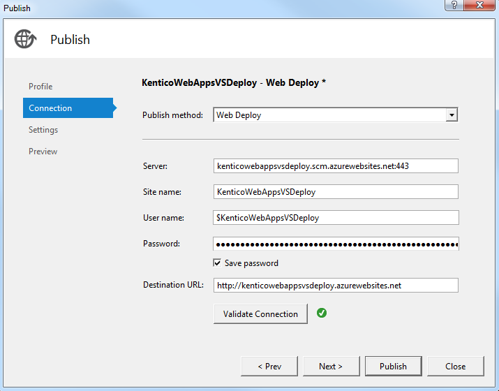

Setting up Kentico in Azure Web Apps
This scenario expects that you want to create a new Kentico website as a Azure Web Apps service. You can create a new Kentico website:
See other options of deploying Kentico to Azure Web Apps in the Microsoft documentation
Creating Azure Web Apps from the Microsoft Azure Marketplace
You can find a Kentico CMS package in the Azure marketplace. Creating new web apps using the provided template is quick and easy.
Open the Azure Management Portal.
Click Create a resource -> Web + Mobile.
Click See all and search for Kentico CMS.
Select Kentico CMS from the list of results and click Create on the newly opened tab.
Type the URL (name) of your web app.
Select a Resource Group.
Set your preferred App Service plan.
Select an existing or create a new SQL database and server.

Creating a Kentico instance in Azure Web AppsClick Create.
Database installation
Access the created website.
Provide the server name and credentials for the server where you created the database.
Click Next.
Select Use an existing database and type the name of the database created for the website.
Click Next.
Click Next without filling in any fields.
Select Create a new site or import an existing Kentico site and click Next.
The installer redirects you to the Kentico administration interface.
Switch to the Licenses tab and add the license for the website domain.
Perform the following final configurations:
Adjust the web hosting plan mode for your web app.
Configure the tier of your Azure SQL database according to our recommendations.
The Kentico CMS package on the Azure Marketplace is intended mainly for evaluation purposes. To develop fully qualified websites, we recommend installing and deploying Kentico from a local environment, which gives you full control over the project's source files and all ancillary Kentico features (such as applying hotfixes).
Creating Azure Web Apps from Visual Studio
This scenario presumes that you already have a Kentico project installed on a local computer and want to deploy it to the Azure Web Apps service using Visual Studio. Alternatively, you can also create the web app to run Kentico on directly from Visual Studio.
Creating Azure Web Apps in Visual Studio 2017
Open your Kentico project in Visual Studio.
Open the Server Explorer tab (or Database Explorer tab in Express editions of Visual Studio).
Expand the Azure section, right-click App Service, and select Create New App Service...
The Create App Service dialog opens.
Enter the web app name (the resulting URL of your application).
Select the Azure subscription under which the Web App will be created.
Select an existing Resource Group or create a new one.
Select an existing App Service plan or create a new one.

Creating an App Service in Visual Studio 2017Click Create a new SQL Database and create a new database for the application.
Enter the name of the database.
Select an existing or create a new SQL server.
Provide credentials for the server.
Set the Connection String Name field to CMSConnectionString.
Click OK.

Creating a new SQL Database
Back in the main dialog window, click Create.
Visual Studio creates the App Service. Continue with adjusting the configuration of the web.config file of your project, and deploying.
Right-click the created web app (you might need to refresh the App Service section for the app to appear) and select View settings.
Copy the connection string value and paste it to the web.config file of your project.
<connectionStrings><addname="CMSConnectionString"connectionString="Data Source=tcp:YourServerName.database.windows.net,1433;Initial Catalog=YourDatabaseName;User Id=YourUsername@YourServerName;Password=YourPassword;"/></connectionStrings>Replace YourServerName, YourDatabaseName, YourUsername and YourPassword with your own values.
Configuring the connection string after deployment
You can also configure the connection string through the Azure Management Portal in App Services -> select a web app -> Application settings -> Connection strings section. To set the connection string for the web app, change the defaultConnection name to CMSConnectionString.
Make sure that the sessionState mode is set to InProc in the web.config file.
<sessionStatemode="InProc"/>Use InProc mode if you plan to use one instance of the Web App service. If you want to scale your web app to more instances, you will need to configure the session state differently. See Storing cache and session state data in Azure environment.
Right-click the project folder (CMSApp or CMS) in the Solution Explorer and select Publish (or Publish Web App).
A Publish dialog opens.
Click Microsoft Azure App Service.
Select the created web app located under the resource group you specified.
Click OK.
Do not modify the default settings.

Publishing the Web AppClick Publish.
Once the publishing process is finished, Visual Studio automatically opens the base URL of the project in your default browser. Follow the on screen wizard to complete the database installation.
Once everything is set up, we recommend you perform the following configurations to fully customize the web app to suit your needs:
Adjust the web hosting plan mode on your web app.
Configure the tier of your Azure SQL database according to our recommendations.
Creating Azure Web Apps in Visual Studio 2015
Open your Kentico project in Visual Studio.
Open the Server Explorer tab (or Database Explorer tab in Express editions of Visual Studio).
Expand the Azure section, right-click App Service, and select Create New App Service...
A Create App Service window opens.
On the Hosting tab:
Type the web app name (URL).
Select the Azure subscription under which the Web App will be created.
Select an existing Resource Group or create a new one.
Select an existing App Service plan or create a new one.

Creating an Azure App Service application in Visual Studio
Switch to the Services tab and create a new SQL Database for the application:
Select an existing or create a new SQL server.
Provide administrative credentials for the server.
Specify a name for the application's database.
Set Connection String Name to CMSConnectionString.

Click Create.
Visual Studio creates the Web App service. Continue with adjusting the configuration of the web.config file of your project, and deploying.
Right-click the created web app and select View settings.
Copy the connection string value and paste it to the web.config file of your project.
<connectionStrings><addname="CMSConnectionString"connectionString="Data Source=tcp:YourServerName.database.windows.net,1433;Initial Catalog=YourDatabaseName;User Id=YourUsername@YourServerName;Password=YourPassword;"/></connectionStrings>Replace YourServerName, YourDatabaseName, YourUsername and YourPassword with your own values.
Configuring the connection string after deployment
You can also configure the connection string through the Azure Management Portal in App Services -> select a web app -> Application settings -> Connection strings section. To set the connection string for the web app, change the defaultConnection name to CMSConnectionString.
Make sure that the sessionState mode is set to InProc in the web.config file.
<sessionStatemode="InProc"/>Use InProc mode if you plan to use one instance of the Web App service. If you want to scale your web app to more instances, you will need to configure the session state differently. See Storing cache and session state data in Azure environment.
Right-click the project folder (CMSApp or CMS) in the Solution Explorer and select Publish (or Publish Web App).
A Publish dialog opens.
Click Microsoft Azure App Service.
Select the created web app from the drop-down list.
Click OK.
Leave the settings as they are.

Deploying a Kentico project from Visual Studio using Web DeployClick Publish.
Once the publishing process is finished, Visual Studio automatically opens the base URL of the project in your default browser. Follow the on screen wizard to complete the database installation.
Once everything is set up, we recommend you perform the following configuration:
Adjust the web hosting plan mode on your web app.
Configure the tier of your Azure SQL database according to our recommendations.